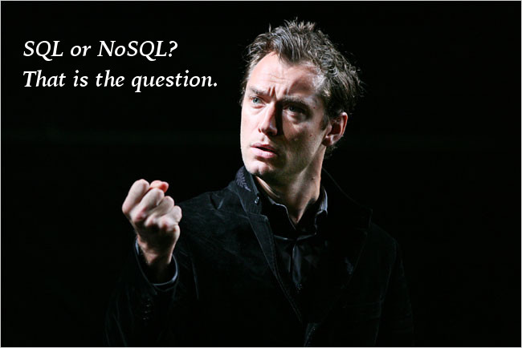

We've done some work with SQL already, but what is NoSQL?
NoSQL means "Not Only SQL"
"A NoSQL database environment is, simply put, a non-relational and largely distributed database system that enables rapid, ad-hoc organization and analysis of extremely high-volume, disparate data types." - Planet CassandraOther names for NoSQL:
- cloud databases
- non-relational databases
- Big Data databases
- Non relational
- Scalable
- Structures: hashes, maps, dictionaries
- No pre-defined schema
- No join operations
- Cheap
- Data are replicated and can be partitioned
- Easy to distribute
- Where SQL uses a schema to structure its data, NoSQL has no schema.
- It can handle a LOT more data. We're talking about millions of users.
- It's fast, and can quickly process large amount of data
- NoSQL is still new, so it is sometimes buggy
- Data is duplicated for redundancy
- No standardized schema
- No standard format for queries.
- No standard language
- Difficult to impose complicated structures
- Depend on the application layer to enforce data integrity
- No guarantee of support
- Too many options
There are different types of NoSql databases.
Key - ValueKey-value databases are easy to work with, scalable, and fast. They are useful for caching, quickly storing data for future use, queuing, distributing information and tasks, and keeping live information.
Examples of Key-Value databases include Redis, Riak, and Memcached / MemchacheDB.
Column DatabasesThis is similar to the row-and-column structure of a relational database, but does not include the strict rules of the relational database.
Column based databases are powerful, and can keep important data of very large sizes. It’s not very flexible, but highly functional, and fast. They are good for keeping unstructured, non-volatile information that can be stored for a long time. They are also very scalable and can handle an extremely large amount of information.
Some examples of column databases are Cassandra, HBase, and Amazon SimpleDB.
Document DatabasesDocument databases are great for keeping large amounts of unrelated and complex information that is highly variable in structure. The objects are documents that are encoded in a common file format such as XML or PDF and stored as a value in a key-value pair. You can query the document.
Document databases are useful for nesting information in deeply complex data structures. They are also JavaScript friendly, interfacing with applications, by using JSON.
Some popular document databases are Couchbase, CouchDB, and MongoDB.
Graph DatabasesGraph databases offer a unique way to store data that handle complex relational information. It deals with the relational information between two entities. Graph databases can model and handle the classification of information in a relational way.
Some popular examples of graph databases include OrientDB and Neo4J.
When to use NoSQL databases:
- Size - when working with massively large sets of data.
- Speed - extremely faster to write data, but reading can depend on which type of database and what is being queried.
- Schema-free - flexibility in structure.
- Automated replications and scaling - NoSQL administrators add redundancy using replication by simply adding secondary nodes to the primary nodes, and is therefore very scalable.
- Multiple choices - There are many models, and you can choose the one that best fits your data type.
A Comparison of SQL and NoSQL (based on Google's App Engine CloudSQL vs Datastore)
| NoSQL(Datastore) | SQL(CloudSQL) | |
|---|---|---|
| Queries | good | great |
| Transactions | good | great |
| Consistency | good | great |
| Scalability | great | good |
| Management | great | good |
| Schema | great | good |
Finally:
Conclusion: it's a tie. They both offer great benefits, so it just depends what data you are storing.
It is possible to use both SQL and NoSQL in conjunction. SQL could store active data as memory, and NoSQL can store archived data, such as in a disk.
Resources:
- What is NoSQL? - Planet Cassandra
- Introduction to NoSQL - VIDEO - Ahmad Naser
- A Comparison Of NoSQL Database Management Systems And Models - Digital Ocean
- Introduction to NoSQL - Building Databases to Support Big Data - Mike Chapple